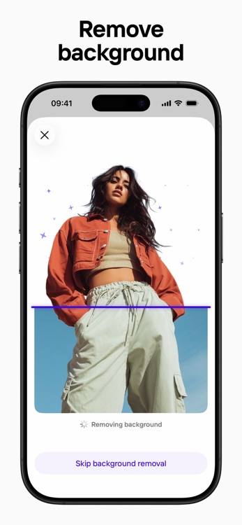
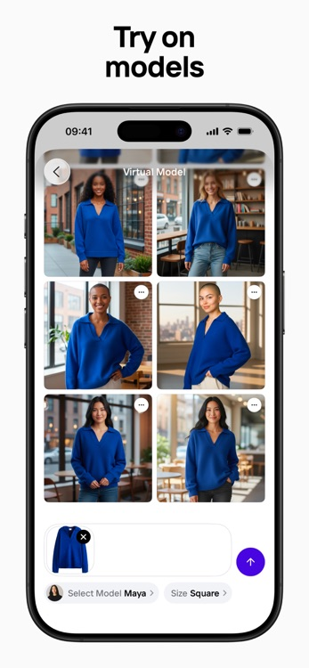

我替朋友开网店抠了一百张图，Photoroom 救了我半条命
帮兼职开闲鱼的朋友处理产品图，从拍一张抠半小时到手机随手一拍三分钟出成品——Photoroom 上手几天后聊聊真实体验。
上个月帮一个朋友开闲鱼小店，她发来几十张护肤品的手机实拍图，让我帮忙"抠干净、换个白底再加点阴影"。我本来打算开 Photoshop，结果试了两张就想放弃——头发丝般的瓶身边缘抠起来没完，一张图半小时，还有 98 张等着。
抱着试试看的心态从官方渠道下载了 Photoroom。说实话我对 AI 抠图类工具一直半信半疑，之前试过几个国产的免费 App，抠完边缘锯齿像被狗咬过，换个背景边缘还留个半透明的鬼影。所以我点开 Photoroom 的时候，预期低得很。
初印象：手机拍一张，三秒抠干净
打开从Photoroom官网注册登录后的 App，拖入一张手机原拍的护肤瓶照片——就正常放在桌面上拍的，背景有点乱，还有旁边漏出来的纸巾角。Photoroom 自动识别到产品，三秒钟后，一个干干净净、边缘锐利的 PNG 浮在纯白背景上。我凑到屏幕前眯着眼睛找了半天，瓶身的渐变色彩没有断层，瓶盖的金属反光也完整保留了下来。
这一下就把我拿捏了。之前手动抠图最头疼的就是边缘——头发、玻璃反射、半透明的包装纸，这些在 Photoshop 里要走七八步蒙版调整。Photoroom 用的是现成训练好的模型，电商产品图这种主体明确的场景，几乎是秒杀。

免费版有 250 张的导出额度，朋友的小店这个量级完全够用来回。但额度用完就没了，不像某些工具是按月重置——这个得算着点用。
实际用下来：两个让我惊喜的功能
Studio Shot 布景：从平拍图到杂志感主图，一键搞定
抠完白底只是第一步，真正让我觉得 Photoroom 不是个"玩具工具"的是 Studio Shot。这个功能的思路和一般 AI 背景生成不太一样——它不给你空白文本框让你写"请生成一个大理石台面加绿植"，而是直接给你一套套预制好的布景模板。每个模板里的道具组合、灯光角度、产品摆放位置都是设计师提前调好的，点一下就把你的产品塞进去，光影关系也是对的。
我那批护肤瓶试了几种：大理石台面加小多肉的风格、木质托盘加咖啡豆的风格，还有最稳的极简白底带柔和侧投影。你别说，套上之后真有那种电商详情页的质感——产品大小、摆放位置都刚刚好，不会出现 AI 背景常犯的"产品飘在天上"或者"比例不对"的毛病。
后来我翻了翻photoroom文档才搞明白它和 AI 背景生成的核心区别：Studio Shot 是"选一个已经拍好的布景然后把产品塞进去"，所以每次出的结果都是稳定的；AI 背景生成是"从零画一个新场景"，创意无限但每次都要赌运气。做主图用 Studio Shot 稳得很，做 banner 或详情页再用 AI 背景生成去玩创意——两者搭配用才是正确姿势。
隐形人台和虚拟模特：服装类目直接封神
朋友的小店也卖一些小件衣服。之前我帮她处理过一件卫衣的主图：平铺拍一张，抠图，换白底，手动加点褶皱模拟立体感——一个多小时，出来的效果还是平得像纸板。
Photoroom 有个 Ghost Mannequin（隐形人台）功能。平拍的衣服丢进去，AI 会模拟一件衣服穿在人体模型上的立体形态，自动生成领口、袖口、下摆的褶皱光影。再进一步，虚拟模特功能直接把这件衣服"穿"到一个 AI 生成的真人模特身上——模特姿势、体型、光照都是可选的。
说实话第一次看到结果我有点离谱——一件平铺的卫衣，几秒钟后穿在了一个扎马尾的亚洲女生身上，布料纹理、褶皱走向、领口的贴合度都对。朋友说这比她花两百块找的兼职模特拍得还自然。
但这里有个实际的坑：服装的面料如果特别复杂（比如蕾丝、薄纱、带大量印花的），AI 处理出来偶尔会在边缘出现"融合"问题——衣服和背景粘在一起一条缝。纯色或简单花纹的面料几乎不会踩雷，复杂面料建议抠完图手动检查一下。

几个让我觉得别扭的地方
好用是好用，但不是没毛病。
免费版额度的限制方式有点反人类。 250 张是"总导出次数"，不是按月重置。也就是说你第一次用完就没了，想继续要么开会员要么换账号。对偶尔用一次的人来说挺别扭——我那批图跑了三次，中间换了个邮箱注册才把朋友的活干完。
批量功能藏在 Pro 版后面。 免费版一次只能处理一张。我本来想试试批量上传二十张让它自己跑完，结果点进去直接弹出订阅窗口。Pro 版单次 50 张、Max 版 250 张，企业级走 API 无上限——对真正的电商团队来说这个分层合理，但对个人卖家来说有点贵。
手机端的精度比网页端略差一点。 同一个产品图，在手机 App 上抠出来的边缘偶尔有一两像素的毛边，拉到网页端再抠一次就干净了。我后来养成了习惯：先用手机快速出初稿，需要精修的再丢到网页端走一遍。
适合谁，不适合谁
适合的人其实挺明确的：个人兼职卖家、小电商团队、需要快速出产品素材的设计师。 如果你每月上新量在几十到几百件之间，Photoroom 绝对能把你的出图效率提一个数量级——之前半小时一张，现在三分钟一张，而且效果比手动抠图更好。服装类目尤其是垂直深耕的，隐形人台加虚拟模特这一套工具链，基本把传统拍摄成本干掉了一大半。
不太适合的：追求纯手动精细控制的设计师、完全不想花一分钱的、需要处理非电商类复杂主体的。 比如你要抠一张头发飞扬的人像做艺术创作，Photoroom 的模型可能不如 Photoshop 的蒙版灵活——它就是为"电商产品图"这个场景训练的，场景对了秒出活，场景错了就露馅。
还有一点要说：很多人会纠结"到底买不买 Pro 版"。我的建议是先把免费的 250 张额度用起来——真的不够用的时候再考虑升级。250 张对个人卖家来说，够你跑好几批新品上架了。
小结
折腾了一周下来，Photoroom 给我的感觉是一个定位极其精准的工具：它就是为电商产品图而生的，抠图、换背景、布景、虚拟模特、批量导出，所有功能都围绕着"让你更快地把商品拍好上架"这一件事展开。没有花里胡哨的多余功能，也没有为了通用而牺牲垂直场景的精度。
朋友的小店现在已经用 Photoroom 处理完所有产品主图，她自己也上手了——反正免费额度够用，新到一件随手拍一张就能出图。对这种兼职小生意来说，Photoroom 可能比学 Photoshop 更划算。